16/05/2020 — Ngất và tức ngực, sau đó là một nhịp chậm bất thường kèm sốc
Bản dịch tiếng Việt của bài "Syncope and Chest Pressure, then an Unusual Bradycardia with Shock" – Dr. Smith’s ECG Blog. Giữ nguyên toàn bộ 15 hình ảnh của bản gốc.
Bình luận về ca này là của Jerry Jones, và nó hay đến mức tôi dán nó lên đầu bài để mọi người đều đọc được:
“Khi vấn đề chỉ là nhịp chậm xoang, nguyên nhân thường là do tăng tác động phó giao cảm, làm ổ tạo nhịp xoang dịch chuyển từ phần trên nút SA xuống phần dưới nút SA (“càng thấp càng chậm”). Nếu nút SA bị thiếu máu cục bộ do động mạch nút SA bị tổn hại, bạn sẽ dễ gặp các khoảng ngưng xoang, blốc SA, ngưng xoang (SA arrest) hoặc rung nhĩ hơn. RCA cấp máu cho động mạch nút SA (về cơ bản đây là nguồn cấp máu cho TOÀN BỘ nhĩ phải) trong 55% trường hợp và LCx cấp máu cho động mạch này trong 45% trường hợp – và điều này không liên quan gì đến ưu thế mạch vành! Một LCx không ưu thế vẫn có thể cho ra động mạch nút SA.”
“Mặt khác, nút AV không đáp ứng với tác động phó giao cảm mạnh như nút SA: dù phần trên nút AV chắc chắn bị ảnh hưởng, tác động của thần kinh tự chủ giảm đi đáng kể khi xuống tới phần dưới nút AV. Vì vậy, ảnh hưởng lên nút AV trong một nhồi máu cơ tim thành dưới đang diễn ra, khi do thiếu máu cục bộ của động mạch nút AV – thường dẫn đến blốc AV độ 3 (dù thường chỉ thoáng qua). Blốc AV độ một và blốc Mobitz I (còn gọi là dẫn truyền Wenckebach) thường qua trung gian phó giao cảm ở phần trên đến phần giữa nút AV (khi thay đổi là cấp tính). Blốc Mobitz II không xảy ra ở nút AV (như bạn đã biết) và là do tắc LAD.”
Tài liệu tham khảo:
1. The Anatomy and Physiology of the Sinoatrial Node—A Contemporary Review (Giải phẫu và sinh lý nút xoang nhĩ — Một tổng quan cập nhật)
Tác giả: OLIVER MONFREDI, M.B.CH.B.,* HALINA DOBRZYNSKI, PH.D.,* TAPAS MONDAL, M.D.,†
MARK R. BOYETT, PH.D.,* và GWILYM M. MORRIS, BM.B.CH.*
PACE, Tập 33, tháng Mười Một năm 2010
2. PAUL MARTIN, The Influence of the Parasympathetic Nervous System on Atrioventricular Conduction (Ảnh hưởng của hệ thần kinh phó giao cảm lên dẫn truyền nhĩ thất)
Circulation Research, Tập 41, Số 5, tháng Mười Một năm 1977
3. Wit, Wellens, Josephson, Electrophysiological Foundations of Cardiac Arrhythmias (Nền tảng điện sinh lý của rối loạn nhịp tim), Nhà xuất bản Cardiotext, 2017
4. Tôi cũng đính kèm một bài về giải phẫu mạch vành mà tôi đã làm thất lạc thông tin trích dẫn.
Ca này do một trong những bác sĩ nội trú năm 3 xuất sắc của chúng tôi, Aaron Robinson, cung cấp.
Một phụ nữ 60 mấy tuổi bị ngất
Một phụ nữ 60 mấy tuổi đến một cơ sở y tế vì ngất.
Bà có tiền sử suy tim sung huyết (CHF), tăng áp phổi, bệnh động mạch vành (CAD) đã CABG, và bệnh thận giai đoạn cuối (ESRD) đang chạy thận nhân tạo. Bà vừa chạy thận một lần vào ngày hôm trước.
Dấu hiệu sinh tồn trước viện: huyết áp 115/70, nhịp tim 65, nhịp thở 12. Bệnh nhân không được ghi điện tâm đồ 12 chuyển đạo trước viện.
Bà đến khoa cấp cứu (ED) trong tình trạng tỉnh, tiếp xúc tốt, chỉ than tức ngực nhẹ.
Điện tâm đồ 12 chuyển đạo được ghi ngay lập tức:

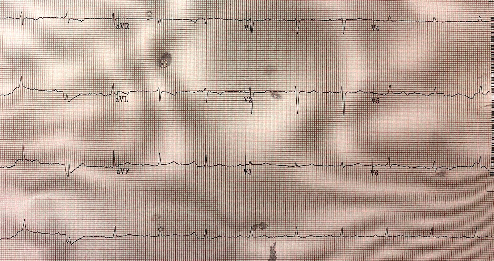
Nhịp xoang (với một nhát dẫn truyền lệch hướng, nhát #2, có thể là nhiễu)
Có sóng T đảo ngược ở aVL, đây là một dấu hiệu nhẹ của nhồi máu cơ tim thành dưới.
Có một chút ST chênh xuống dốc xuống ở V2 gợi ý nhồi máu cơ tim thành sau.
Nhưng không có gì đủ để chẩn đoán.
Diễn biến lâm sàng
Siêu âm tim tại giường không thấy tràn dịch màng ngoài tim, không có đường B, nhưng thất phải giãn kèm vách liên thất bị đẩy cong, nên thuyên tắc phổi (PE) nằm trong chẩn đoán phân biệt. Tuy nhiên, xem lại hồ sơ cho thấy bà có tiền sử tăng áp phổi và thất phải lớn trên các lần siêu âm tim trước đây.
–Lactat 9.0. Kali bình thường.
–Troponin độ nhạy cao lần đầu (không rõ loại xét nghiệm) trả về tăng ở mức 174 ng/L (tương đương khoảng 0.174 ng/mL với xét nghiệm thế hệ hiện hành).
Đột nhiên, bệnh nhân khó thở dữ dội và đau ngực.
Trên monitor có nhịp chậm với QRS hẹp.
Bệnh nhân được tiêm 1 mg atropine và được dán miếng dán tạo nhịp.
Điện tâm đồ 12 chuyển đạo lần hai được ghi (điện tâm đồ 2).

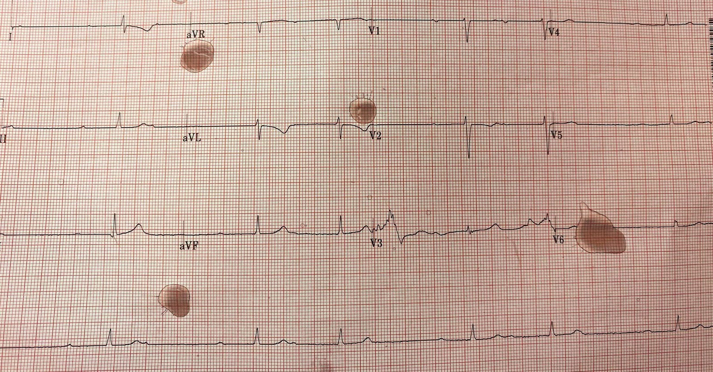
Có nhịp theo nhóm, điển hình của Wenckebach. Blốc AV hoàn toàn sẽ có nhịp thoát bộ nối hoặc thất đều, chứ không theo nhóm Có một khoảng PR rất dài, nhưng dường như vẫn dẫn truyền.
Khoảng tiếp theo dài hơn.
Nhát tiếp theo bị rớt.
Vậy đây là Wenckebach nhưng với khoảng PR ngắn nhất cũng trên 400 ms!
Xem phân tích chi tiết của Ken Grauer bên dưới. Có sóng T hơi tối cấp ở III với sóng T tối cấp đảo ngược soi gương ở aVL. Giờ thì càng nghi ngờ nhồi máu cơ tim thành dưới hơn nữa.
Phân biệt đây là blốc AV hoàn toàn hay Wenckebach có quan trọng không? Có.
Vì Wenckebach nhiều khả năng đáp ứng với atropine, trong khi blốc AV hoàn toàn ít có khả năng đáp ứng.
(Blốc AV hoàn toàn có thể đáp ứng với atropine khi QRS hẹp, vì điều này cho thấy vị trí blốc nằm trên bó His; khi QRS rộng, atropine sẽ không có tác dụng).
Wenckebach thường là một nhịp lành tính. Tuy nhiên, đây là một trường hợp Wenckebach cực đoan, và đi kèm ngất và sốc. Vì vậy cần sẵn sàng điều trị như blốc AV hoàn toàn bằng thuốc tăng tần số tim như dobutamine, hoặc tạo nhịp, nếu cần.
Vì vậy, chẩn đoán đúng nhịp giúp bạn biết rằng atropine có thể có tác dụng, và đáng để dùng một liều lớn.
1 mg atropine có thể chưa đủ, và có thể dùng tới 3 mg atropine.
Đã dùng 1 mg và tôi (Smith) không rõ nó có tác dụng tức thì nào.
Diễn biến lâm sàng (tiếp):
Người điều trị nhận định nguyên nhân ngất của bệnh nhân là blốc tim. Bệnh nhân lúc vào lúc ra khỏi blốc, nhưng bị tụt huyết áp với huyết áp tâm thu 60 mấy khi ở trong blốc.
Do không ổn định, bệnh nhân được đặt nội khí quản và tạo nhịp được để sẵn sàng.
Nhịp tim ổn định lại mà không cần can thiệp gì khác ngoài liều atropine duy nhất đó.
Bệnh nhân được chuyển đến một trung tâm tuyến cuối bằng trực thăng. Bệnh nhân ổn định khi chuyển viện.
Tại trung tâm tuyến cuối, troponin của bệnh nhân đạt đỉnh 0.25 ng/mL (xấp xỉ 250 ng/L) và bệnh nhân được thông tim.
Chụp mạch vành
Cầu nối tới LAD và động mạch mũ tự thân của bệnh nhân đều được đặt stent.
Không thấy đề cập đến dòng chảy TIMI.
Điện tâm đồ sau thông tim được ghi (điện tâm đồ 3).

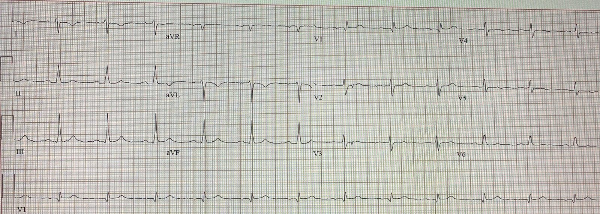
Nhịp xoang với khoảng PR bình thường và không có bất kỳ loại blốc AV nào.
Sóng T ở III đã trở về bình thường.
Sóng T ở aVL vẫn đảo ngược, nhưng không còn tối cấp.
Điều này xác nhận rằng các dấu hiệu trên các điện tâm đồ trước đó đúng là do thiếu máu cục bộ.
Bệnh nhân hồi phục hoàn toàn.
Siêu âm tim cho thấy EF 50-55% và không thấy đề cập rối loạn vận động thành. Nhiều khả năng ổ nhồi máu nhỏ đến mức, nếu có rối loạn vận động thành (WMA), nó đã hồi phục khi tưới máu được tái lập.
Những điểm cần học:
1. Blốc AV hoàn toàn có nhịp thoát đều, không phải nhịp theo nhóm.
2. Khi blốc AV là Wenckebach và QRS hẹp, nhiều khả năng atropine sẽ có tác dụng. Hãy thử liều cao, tới 3 mg.
3. Nếu atropine không có tác dụng, dobutamine là một lựa chọn tốt để thử tăng tần số tim.
4. Tạo nhịp nếu các biện pháp trên không hiệu quả, qua da hoặc qua tĩnh mạch.
5. Về xử trí sốc ở bệnh nhân bệnh thận giai đoạn cuối: bệnh nhân cực kỳ khó lấy đường truyền. Bác sĩ đã đặt được một đường truyền tĩnh mạch dưới hướng dẫn siêu âm, nhưng ngay từ đầu bệnh nhân đã không có mạch máu tốt.
6. Để đặt nội khí quản nhanh (RSI), họ đã chọn sử dụng đường vào chạy thận của bệnh nhân, là một catheter dưới đòn hai nòng. Cách này hiệu quả rất tốt. Đừng quên rằng bạn có thể dùng các cổng đường vào chạy thận trong tình huống nguy kịch.

===================================
BÌNH LUẬN CỦA TÔI, bởi KEN GRAUER, MD (16/5/2020):
===================================
Dr. Smith gửi cho tôi điện tâm đồ trong Hình 1, và nhờ tôi diễn giải nó mà không có thông tin lâm sàng hỗ trợ.
- Nếu BẠN được đưa điện tâm đồ ở Hình 1 mà không có bất kỳ thông tin lâm sàng nào hỗ trợ — BẠN sẽ diễn giải nó NHƯ THẾ NÀO?
- BẠN có nghĩ là có blốc AV không? — và/hoặc Điều gì khác?
- T.B. (P.S.) — Sau này tôi mới biết ca này do Dr. Aaron Robinson cung cấp — một trong những bác sĩ nội trú năm 3 xuất sắc của Dr. Smith. Dr. Robinson ĐÃ cung cấp phần thông tin lâm sàng còn thiếu mà tôi chưa biết vào lúc viết phần diễn giải của mình, kèm đầy đủ giản đồ bậc thang dựa trên điện tâm đồ thứ 2 mà Dr. Robinson đã trình bày ở trên. Với những ai trong số CÁC BẠN quan tâm đến việc diễn giải blốc AV — XIN HÃY ĐI QUA phần phân tích chi tiết từng bước của tôi dưới đây.
- T.B.T.B. (P.P.S.) — Vì các vấn đề về sử dụng atropine và phân biệt giữa blốc AV không hoàn toàn với hoàn toàn đã được nêu ra trong phần bàn luận của Aaron — tôi đã thêm một PHẦN BỔ SUNG ở cuối cùng Bình luận của tôi bên dưới.
- CUỐI CÙNG — Với những ai muốn có một bài ôn tập bằng Video về những điều cơ bản của blốc AV — xin BẤM VÀO ĐÂY. Và, nếu bạn bấm vào SHOW MORE (Hiện thêm) (bên dưới video trên trang You-Tube) — bạn sẽ thấy một Mục lục chi tiết có liên kết cho phép bạn nhảy đến bất kỳ phần nào về blốc AV mà bạn quan tâm.

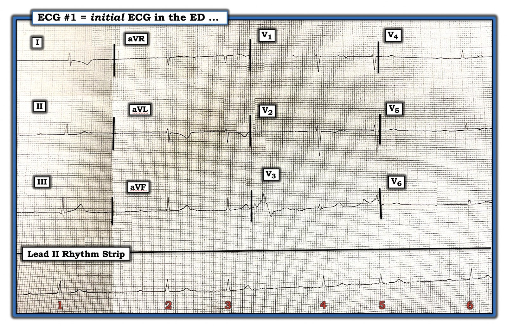
Đây là một bản ghi khó diễn giải: Có nhiều lý do khiến điện tâm đồ ở Hình 1 không phải là một bản ghi dễ diễn giải. Những lý do này gồm:
- Không có bệnh sử.
- Các dấu hiệu điện tâm đồ rất tinh tế (!) — đối với cả nhịp tim, lẫn những gì đang diễn ra trên điện tâm đồ 12 chuyển đạo.
- Phức bộ QRS và sóng P đều rất nhỏ. Và do nhịp chậm — trên toàn bộ bản ghi chỉ có 6 nhát.
- Có những vấn đề kỹ thuật cản trở việc diễn giải. Những vấn đề này gồm: i) bản ghi bị nghiêng và bị gấp (do đó khó thực hiện các phép đo chính xác cần thiết khi đánh giá một rối loạn nhịp phức tạp); và, ii) có nhiễu đường nền làm việc nhận diện sóng P càng thêm phức tạp.
- Cần một chút tư duy “vượt ra khỏi khuôn khổ” để diễn giải bản ghi này.
- Ngoài compa đo (calipers) — tôi cần một giản đồ bậc thang (laddergram) để xác nhận chẩn đoán mà tôi nghi ngờ. (Tôi ước tính rằng 98-99% trường hợp, tôi không cần giản đồ bậc thang để xác nhận chẩn đoán nhịp mà tôi nghi ngờ — nhưng đây là một ca mà tôi cần ...)
Cách tiếp cận TỪNG BƯỚC của tôi với điện tâm đồ #1: Bất chấp những thách thức trên — vẫn có thể diễn giải chính xác điện tâm đồ #1 — và có thể làm được trong không quá vài khoảnh khắc ngắn ngủi. Dưới đây là cách tiếp cận TỪNG BƯỚC của tôi để đánh giá điện tâm đồ #1, như được trình bày trong Hình 1:
- Tôi thấy TỐT NHẤT là luôn bắt đầu đánh giá bất kỳ điện tâm đồ nào bằng ít nhất một cái nhìn nhanh vào nhịp. Điều thứ 1 tôi nhận thấy ở Hình 1 là sự hiện diện của nhịp THEO NHÓM (group beating) (tức là, các khoảng dài-ngắn luân phiên ở 6 nhát trên bản ghi).
- ĐIỂM THEN CHỐT (PEARL) #1 — Sự hiện diện của nhịp theo nhóm thường có nghĩa là đang có một dạng hiện tượng Wenckebach nào đó. Khi có sóng P và phức bộ QRS hẹp (như đã thấy ở Hình 1) — thì điều này thường gặp nhất là do Wenckebach AV (tức là, blốc AV độ 2 Mobitz loại I).
- ĐIỂM THEN CHỐT (PEARL) #2 — Wenckebach AV thường gặp kèm với nhồi máu cơ tim thành dưới (MI) mới hoặc gần đây. Vì vậy — bất cứ khi nào nghi ngờ có Wenckebach AV, tôi luôn lập tức xem thật kỹ điện tâm đồ 12 chuyển đạo để tìm dù chỉ một gợi ý nhỏ nhất của nhồi máu cơ tim thành dưới gần đây hoặc cấp.
- NẾU tôi có thể nhận ra khả năng nhồi máu cơ tim thành dưới gần đây hoặc cấp trên một bản ghi có nhịp theo nhóm — thì chẩn đoán một dạng Wenckebach AV nào đó gần như chắc chắn. Vấn đề chính khi đó trở thành tìm ra CÁCH chứng minh điều này.
Tìm dấu hiệu nhồi máu cơ tim thành dưới trên điện tâm đồ ở Hình 1: Dù không biết bệnh sử — vẫn có gợi ý mạnh về một nhồi máu cơ tim dưới-sau tinh tế, gần đây (hoặc cấp):
- Có nhịp chậm (rất thường gặp trong nhồi máu cơ tim thành dưới cấp).
- Sóng T ở chuyển đạo III và aVF có vẻ tối cấp (tức là, nhọn hơn mức đáng có, xét theo biên độ nhỏ của phức bộ QRS ở các chuyển đạo này).
- Đối diện với chuyển đạo III — có ST-T chênh xuống soi gương dạng hình soi gương (mirror-image) ở chuyển đạo aVL, cũng như ở chuyển đạo I.
- ST-T ở chuyển đạo V2 không bình thường (tức là, sóng T ở V2 hai pha). Trong bối cảnh nhồi máu cơ tim thành dưới tinh tế gần đây — điều này gợi ý khả năng có tổn thương thành sau. (Đáng tiếc là nhiễu làm hỏng nhận định của chúng ta về những gì diễn ra ở chuyển đạo V3).
- Tổng hợp lại — các dấu hiệu trên phải gợi ý nhồi máu cơ tim dưới-sau gần đây cho đến khi bạn chứng minh được điều ngược lại! Điều này càng củng cố khả năng nhịp theo nhóm là biểu hiện của một dạng Wenckebach AV nào đó.

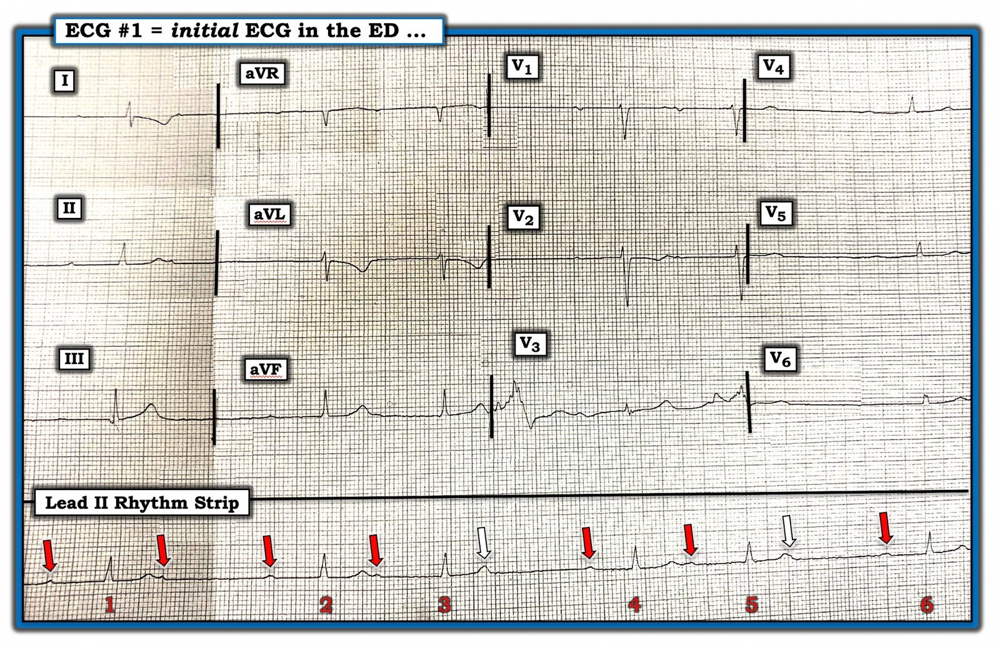
Hình 2 — Xem kỹ hơn nhịp tim: Giờ đã được “trang bị” hiểu biết rằng nhịp theo nhóm mà chúng ta nhận ra ở Hình 1 có lẽ là kết quả của một dạng Wenckebach AV nào đó — tôi đã xem kỹ hơn để cố gắng nhận diện tất cả sóng P:
- Như đã nói ở trên — kích thước nhỏ của sóng P ( + những khiếm khuyết kỹ thuật về chất lượng của bản ghi này) khiến khó chắc chắn về một phần hoạt động nhĩ. Ở Hình 2 — tôi đã thêm các mũi tên ĐỎ phía trên những sóng lệch mà tôi chắc chắn là sóng P.
- Dùng COMPA ĐO (một công cụ thiết yếu để đánh giá bất kỳ rối loạn nhịp phức tạp nào) — sẽ hợp lý nếu cũng có sóng P ở những vị trí tôi đánh dấu bằng mũi tên TRẮNG ở Hình 2. Đó là vì một loạn nhịp xoang nhẹ có khả năng là nhịp nền cao hơn nhiều so với một dạng blốc đường ra nút xoang bất thường nào đó. Nhìn kỹ — có sự tăng nhẹ biên độ sóng T của nhát #3 và 5, so với biên độ của các sóng T khác (cũng như gợi ý tinh tế về một khía ở phần cuối sóng T của nhát #5). Điều này gợi ý mạnh rằng tất cả các mũi tên tôi vẽ đều chỉ vào sóng P xoang nền (được thể hiện bằng các mũi tên ĐỎ ở Hình 3).

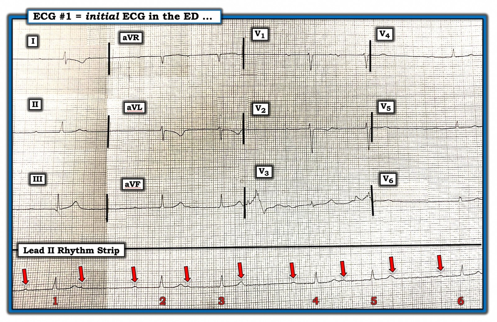
Vẽ giản đồ bậc thang: Giờ tất cả sóng P đã được nhận diện — tôi sẵn sàng bắt đầu vẽ giản đồ bậc thang. LƯU Ý: Học cách vẽ giản đồ bậc thang là một thách thức (và việc này đòi hỏi chút thời gian và công sức). Dù vậy — Học cách ĐỌC giản đồ bậc thang đã được vẽ sẵn cho bạn thì DỄ! Nhưng ngay cả NẾU giản đồ bậc thang hoàn toàn mới với bạn — tôi đoán bạn sẽ thấy dễ chịu hơn nhiều khi nhìn chúng sau khi xem 7 Hình tiếp theo — bắt đầu từ Hình 4!
- LƯU Ý: Với những ai muốn có một “Bài vỡ lòng” ngắn gọn về cách vẽ giản đồ bậc thang (laddergram) — BẤM VÀO ĐÂY. Nếu bạn thích ôn lại những điều cơ bản về giản đồ bậc thang qua video — BẤM VÀO ĐÂY.
- Để xem thêm một vài ca minh họa CÁCH sử dụng giản đồ bậc thang — BẤM VÀO ĐÂY — và VÀO ĐÂY —
Bắt đầu với Hình 4: Tôi rất thích dùng PowerPoint để vẽ giản đồ bậc thang. Với ứng dụng này, rất dễ nhân bản các thành phần giống nhau (như các mũi tên hay đường thẳng nối với nhau) — và PowerPoint cũng giúp dễ dàng thả các thành phần đường thẳng hay mũi tên thẳng đứng vào bất kỳ tầng nào của giản đồ bậc thang một cách tiết kiệm thời gian.
- Giản đồ bậc thang thường được dựng với 3 Tầng. Bình thường, xung điện được dẫn truyền nhanh qua Tầng Nhĩ và Thất — đó là lý do vì sao, trừ khi có blốc nhánh, thường có thể vẽ các đường thẳng đứng (hoặc gần như thẳng đứng).
- Dẫn truyền thường chậm nhất qua Tầng Nút AV — đó là lý do vì sao các đường đi qua tầng này nghiêng nhiều nhất.
- ĐIỂM THEN CHỐT (PEARL) #3 — Tầng khó vẽ nhất hầu như luôn là Tầng Nút AV. Vì vậy — Hãy để Tầng Nút AV lại sau cùng khi vẽ giản đồ bậc thang!

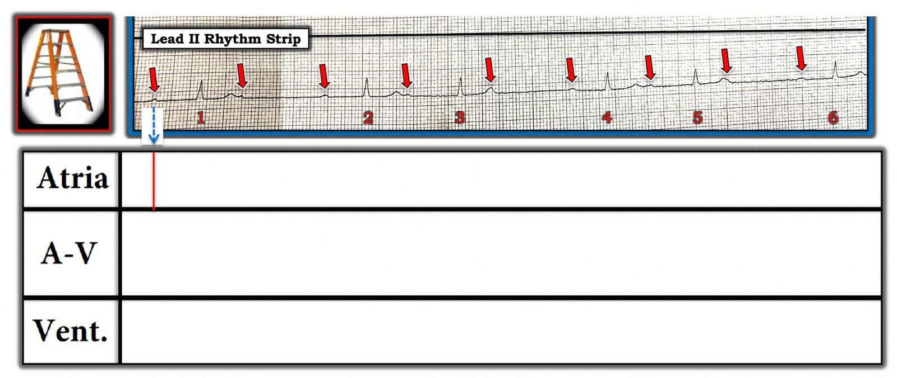

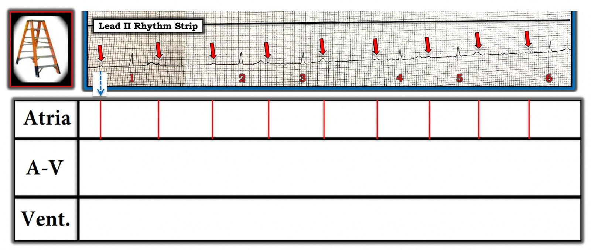

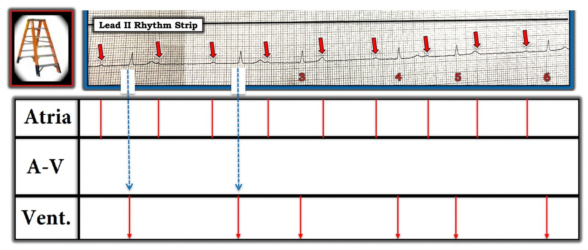

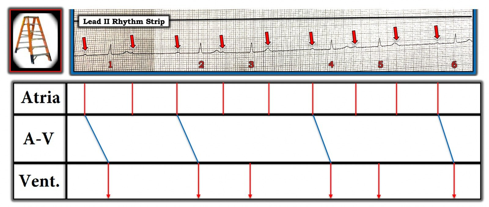

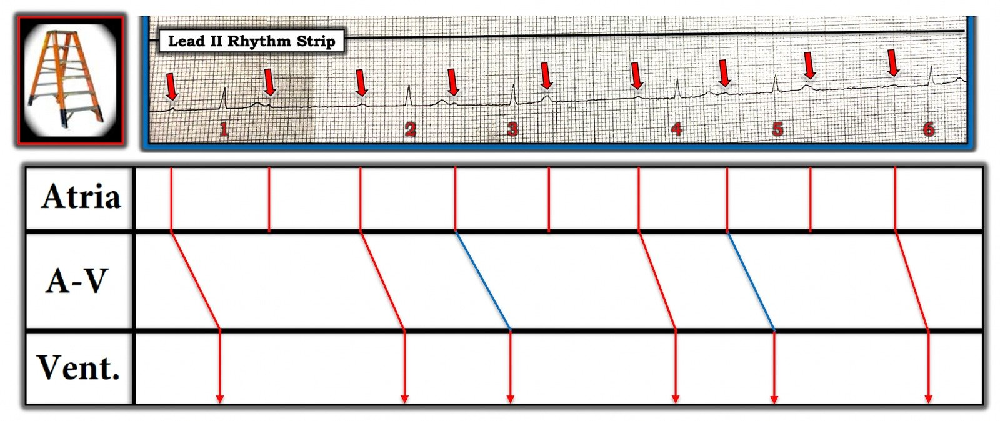

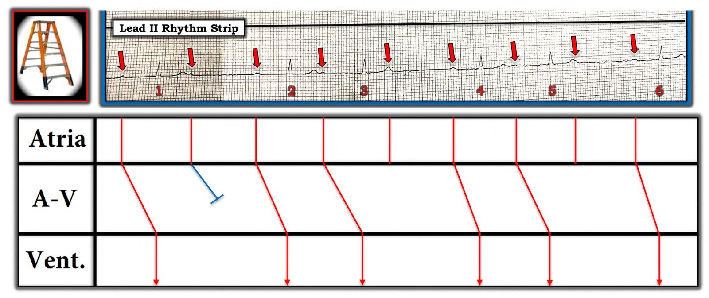

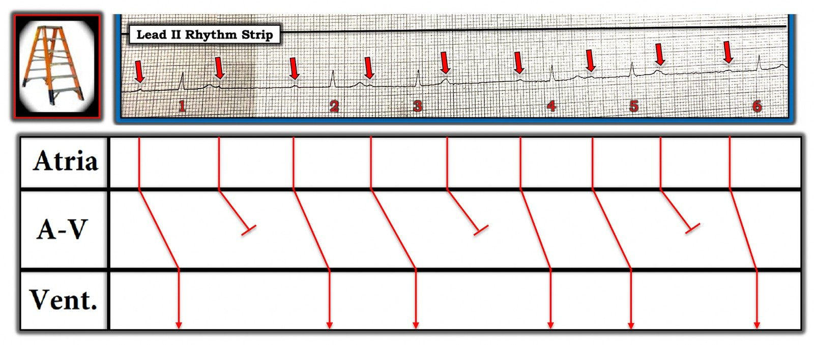
PHẦN BỔ SUNG: Tôi viết Phần bổ sung này để giải đáp các thắc mắc xoay quanh việc dùng atropine — và CÁCH phân biệt giữa blốc AV hoàn toàn ( = độ 3) với các dạng blốc AV độ 2 chỉ trong vài giây!
- Phần lớn các trường hợp, NẾU mức độ blốc AV là hoàn toàn (tức là độ 3) — thì nhịp thất ít nhất phải khá đều. Đó là vì các nhịp thoát xuất phát từ nút AV, bó His hoặc tâm thất thường là những nhịp khá đều. Có thể có ngoại lệ (ngoại lệ dễ xảy ra hơn trong lúc hồi sinh tim phổi) — nhưng ngay cả trong lúc hồi sinh, thường vẫn có một kiểu đều đặn của nhịp thất nhận ra được.
- ĐIỂM THEN CHỐT (PEARL) #4 — NẾU nhịp thất trên một bản ghi có blốc AV không đều (hoặc gần như đều) — thì nhiều khả năng ít nhất một phần dẫn truyền vẫn đang diễn ra (tức là thay vì độ 3 — nhiều khả năng đó là blốc AV độ 2 mức độ cao). Nắm được điểm then chốt này đã giúp tôi vô cùng nhiều trong nhiều năm qua, cho phép tôi biết chỉ trong vài giây (!) khi nhìn vào bất kỳ bản ghi nào liệu có nhiều khả năng là blốc AV hoàn toàn hay không. Vì vậy, với Hình 1 ở trên của tôi — tôi ngay lập tức biết đây không phải blốc AV hoàn toàn vì không có chút dáng dấp đều đặn nào trong nhịp thất.
- ĐIỂM THEN CHỐT (PEARL) #5 — Một cách khác để chúng ta có thể ngay lập tức BIẾT rằng nhịp trong Hình 1 của tôi (ở trên) không phải blốc AV hoàn toàn — là khoảng PR đứng trước các nhát #1, 2, 4 và 6 đều GIỐNG NHAU! Đây chính là lý do tôi có thể vẽ những đường nghiêng màu XANH LAM đó trong Hình 7 của tôi cho giản đồ bậc thang (Xem ở trên).
- ĐIỂM THEN CHỐT (PEARL) #6 — Khi xem một dạng blốc AV phức tạp gần như đều — nhưng biểu hiện một hoặc nhiều nhát rõ ràng xuất hiện sớm hơn nhiều so với dự kiến — nên biết rằng lý do một số nhát xuất hiện sớm hơn dự kiến là vì những nhát đến sớm hơn này có lẽ đang được dẫn truyền.
- ĐIỂM THEN CHỐT (PEARL) #7 — Như trong Hình 10 của tôi (ở trên) — nhát được dẫn truyền thứ 2 trong mỗi nhóm 3 nhát vẫn được dẫn truyền, dù khoảng PR trên 600 msec! Điều này dẫn đến câu hỏi thường gặp: khoảng PR có thể DÀI ĐẾN MỨC NÀO mà vẫn dẫn truyền được? TRẢ LỜI là = RẤT dài! Tôi đã gặp những ca có khoảng PR lớn hơn 1,0 giây (tức là >1000 msec) — mà vẫn dẫn truyền được!
ĐIỂM THEN CHỐT (PEARL) #8 — là “Quan điểm của tôi” về câu hỏi “KHI NÀO nên dùng atropine?”
- Atropine không vô hại. Đặc biệt trong bối cảnh thiếu máu cục bộ cấp hoặc nhồi máu — tần số xoang tăng lên do thuốc có thể gây hại vì làm tăng nhu cầu oxy cơ tim (điều này có thể khởi phát rối loạn nhịp nhanh, kể cả VT!).
- Atropine hiệu quả nhất khi điều trị nhịp chậm do tăng trương lực phế vị (và trương lực phế vị có xu hướng tăng, đặc biệt trong những giờ đầu của nhồi máu thành dưới cấp).
- Atropine không được khuyến cáo để điều trị nhịp chậm/blốc AV ở bệnh nhân nhồi máu cơ tim thành dưới cấp — NẾU bệnh nhân không có triệu chứng, với tần số tim ~50/phút và huyết áp có vẻ ổn định ở mức ~80-90 mm Hg (Truyền dịch tĩnh mạch thận trọng có thể giúp ích; nhịp chậm có thể chỉ thoáng qua).
- Mặt khác — atropine được khuyến cáo NẾU bệnh nhân nhồi máu cơ tim thành dưới cấp có triệu chứng (tức là đau ngực, khó thở, tụt huyết áp). Đôi khi “Phải có mặt ở đó mới biết” (tại giường bệnh) — để xác định LIỆU một bệnh nhân có tần số 40-50/phút và/hoặc huyết áp tâm thu ~80-90 mm Hg cần điều trị ngay lập tức hay chỉ cần theo dõi sát và “sẵn sàng” điều trị (kể cả tạo nhịp chờ sẵn).
- Atropine tác dụng nhờ hiệu ứng kháng phó giao cảm (parasympatholytic) làm tăng tần số phát xung của nút SA — đồng thời cải thiện dẫn truyền qua nút AV. Vì vị trí thường gặp của Wenckebach AV là tại nút AV — atropine thường có hiệu quả (đặc biệt trong những giờ đầu của nhồi máu cơ tim thành dưới cấp). Ngược lại, vì mức blốc trong Mobitz loại II thường nằm dưới nút AV — atropine khó có tác dụng với Mobitz II.
- Bệnh nhân nhồi máu cơ tim thành dưới cấp kèm tăng trương lực phó giao cảm do hệ quả của nó — đôi khi biểu hiện tiến triển từng–bậc từ blốc AV độ 1 — sang blốc AV độ 2, Mobitz loại I ( = Wenckebach AV) — rồi đến blốc AV độ 3 (hoàn toàn). Vì vậy — ngay cả blốc AV độ 3 xảy ra trong những giờ đầu của nhồi máu cơ tim thành dưới cấp cũng có thể phản ánh tăng trương lực phó giao cảm, và do đó đáp ứng với atropine (đôi khi ở liều thấp hơn). Ngược lại — blốc AV hoàn toàn kèm QRS giãn rộng thì ít có khả năng hơn nhiều là do một vấn đề tại nút AV có thể đáp ứng với atropine.
- Atropine có thể gây vấn đề trong blốc AV do thiếu máu cục bộ, vì nhu cầu cơ tim tăng lên mà nhịp nhanh hệ quả có thể gây ra.
- Mỗi bệnh nhân có thể đáp ứng khác nhau với atropine! (tức là hãy cá thể hóa điều trị!).
- Liều atropine khuyến cáo = 0,5-1,0 mg tĩnh mạch (hoặc trong xương) — có thể lặp lại sau 3-5 phút (tới tổng liều ~3 mg). NẾU dùng để điều trị vô tâm thu thời gian ngắn được cho là do cường phế vị — thì nên dùng liều khởi đầu cao hơn (tức là 1 mg tĩnh mạch hoặc trong xương — lặp lại sau 1-3 phút, tới tổng liều 3 mg).
- Về Ca NÀY — Chúng ta được biết bệnh nhân trong ca này ban đầu đến viện trong nhịp xoang với tần số tim hợp lý — huyết áp ~115/70 mm Hg — và không hơn “cảm giác khó chịu nhẹ ở ngực”. Sau đó bà đột ngột xuất hiện đau ngực và nhịp Wenckebach AV như trong Hình 1 của tôi ở trên. Lúc này thấy sóng T tối cấp mới ở chuyển đạo III và aVF — gợi ý mới khởi phát nhồi máu cơ tim thành dưới cấp + mới xuất hiện nhịp chậm với Wenckebach AV và nhịp QRS hẹp + mới xuất hiện tụt huyết áp (huyết áp tâm thu 60 mấy). SUY NGHĨ CỦA TÔI — Tôi không thể nghĩ ra một tình huống nào thuận lợi hơn để atropine có khả năng hiệu quả với bệnh nhân này!
- SUY NGHĨ CỦA TÔI về liều atropine — Dù hoàn toàn thừa nhận rằng không có một “câu trả lời đúng” duy nhất (tức là Phải có mặt ở đó mới biết”) — tôi sẽ bắt đầu với 0,5 mg atropine cho nhịp mà tôi thấy trong Hình 1 của tôi — rồi chờ bên giường bệnh trong vài phút tiếp theo. Thuốc này không vô hại (như gạch đầu dòng thứ 1 của tôi ở trên, thuộc ĐIỂM THEN CHỐT (PEARL) #8) — và bạn “không thể rút lại atropine” sau khi đã tiêm. Liều atropine luôn có thể được lặp lại nếu cần.
Chúng tôi xin CẢM ƠN Dr. Aaron Robinson đã trình bày ca bệnh thú vị này!